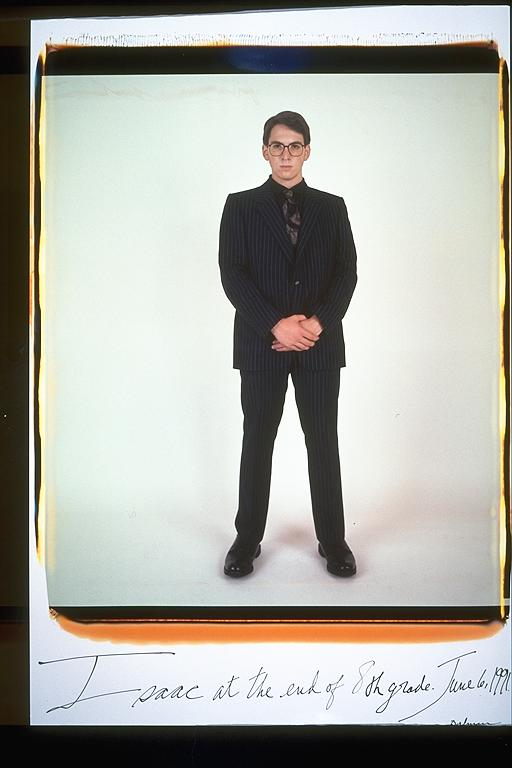

Pals: Boys Who Grew Up Together
elsadorfman.com/pals
Aldo: Isaac looks a lot older than fourteen in this picture. It's not just the suit, although that helps. This was actually the age when boys do feel older though, and maybe he's reflecting that. Boys feel older cause they're getting physically bigger, so people begin to take them a bit more seriously … just a bit though.

elsad@comcast.net